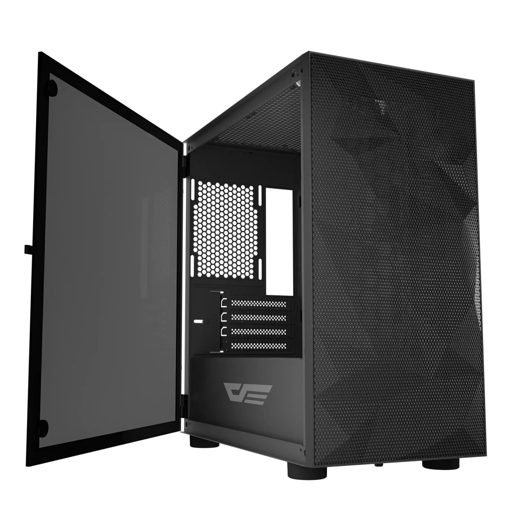

|  | A computer case, also known as a computer chassis, is the enclosure that contains most of the components of a personal computer (usually excluding the display, keyboard, and mouse). Cases are usually constructed from steel (often SECC—steel, electrogalvanized, cold-rolled, coil), aluminium and plastic. Other materials such as glass, wood, acrylic and even Lego bricks have appeared in home-built cases. |
Cases can come in many different sizes (known as form factors). The size and shape of a computer case are usually determined by the form factor of the motherboard since it is the largest component of most computers. Cases are also referred to by their size (such as ATX case, Mini ITX case, etc.) Consequently, personal computer form factors typically specify only the internal dimensions and layout of the case. Form factors for rack-mounted and blade servers may include precise external dimensions as well since these cases must themselves fit in specific enclosures. |
|